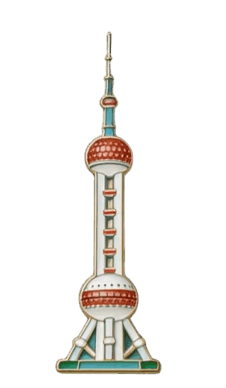
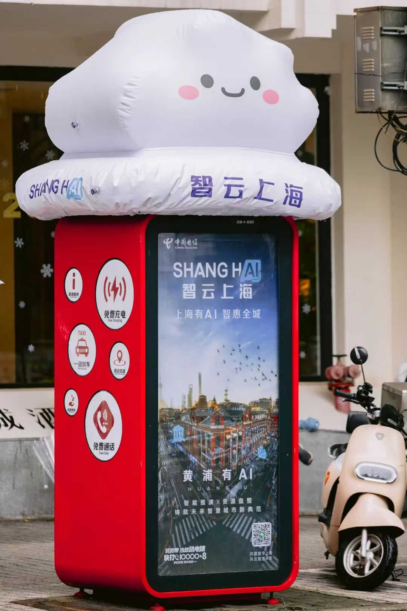
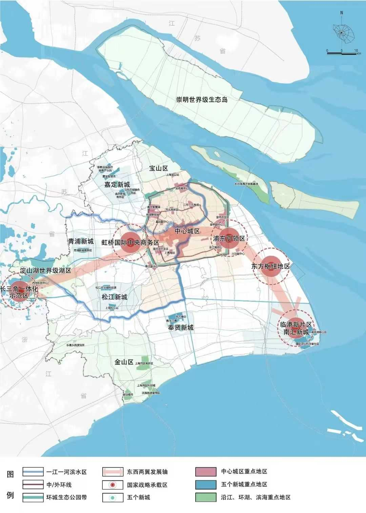

AI与大数据技术融合海派底蕴，重塑城市面貌
石库门、外滩、老弄堂与烟火气，构成了上海深厚的城市记忆
▪ 石库门里弄生活
▪ 外滩历史建筑
▪ 传统商业街区
▪ 公交与地铁通勤
▪ 老字号城市文化
大数据、人工智能和物联网，让上海从传统城市转向智能
▪ 智慧交通调度
▪ 城市大脑治理
▪ 数字便民服务
▪ 金融与科创升级
▪ 无人机与智能设施

上海在交通、治理、生活、产业、医疗、教育等领域推进数字化建设
智慧交通
城市治理

数字生活

产业升级
智慧医疗
智慧教育
在中国人的健康检测中，幽门螺杆菌感染比例高企，耐药性与病变风险日益加剧。
作为国内首个行业数据空间，由上海数据交易所等牵头组织的幽门螺杆菌数据空间，把医疗机构、科研机构、企业等多维度数据汇聚起来，降低幽门螺杆菌试剂盒研发成本，提高医疗器械证的获批率。
和一般的数据产品不同，数据空间从需求方的视角出发，更加贴近应用场景。企业提出需求后，数据空间会直接响应企业需求，提供的数据更有针对性。同时，数据空间会对数据进行精细化的画像与标识处理，流通的是数据标识，而非数据本身，让数据"可用不可看"，既打破数据壁垒，又构建一个可信可控、互联互通、价值共创的数据空间生态系统。
从2024年起，从上海到全国百城的居民，都被"碰一下"包围。
在足够简单的"扫一扫"面前，"碰一下"竟然还能更简单。只需解锁手机、碰一下商家设备、直接支付。不用满手机找付款码，对老年人、视障人士更为方便。老年人说："像'滴'老年卡一样简单。"
除了支付以外，"碰一下"还能点餐、入会、验票、租充电宝、开智能货柜甚至开门等。"碰一下"最先普及的场景或许是点餐，目前全国已有10万家餐厅接入，包括华莱士、吉祥馄饨、德克士等连锁品牌餐厅。年轻人说："点餐不用排队真好！"
当商家们希望吸引更多年轻人和未来目标群体来商场时，支付便利性绝对是一大考量因素。在上海静安大悦城首批接入的200家商户中，"碰一下"覆盖率达92%，一碰搞定支付、入会、营销"三连"。
作为上海首个落地应用的政务服务大模型，在徐汇区行政服务中心上线的"徐汇区政务服务大模型"成了法人事项受理综合受理大厅18位窗口工作人员的"AI军师"。
这款政务大模型汇聚39个涉企事项数据集、超过500个体系化知识点和2300多条高频咨询语料，能实现10轮以上自然语言问答，对高频事项的咨询准确率超过90%。对于窗口工作人员来说，它就像一位"查找员"，不仅能辅助完成烦琐的查找条例任务，还能识别不少口语化问题。
值得一提的是，大模型拥有动态学习能力，对于正确答案，大模型会加深确认，对错误答案，大模型会将正确答案加入知识库中重新学习。
政务大模型还是一位"带教老师"，让原本需要6个月的新员工培训，缩短了至少2个月，大大压缩了培训成本和培训压力。
得益于上海电信联合宝钢股份厚板事业部等打造的"5G确定性网络在智能制造中的应用"项目，宝钢这个"钢铁巨人"和新技术碰撞出了火花。
基于5G专网，宝钢缩短生产线建设或改造的工程周期；减少设备维护员工的日常电缆巡检次数，特别是在安全风险较高区域的日常巡检中，能从根本上改善生产劳动安全状况……
除了5G，AI也在5G低时延、高带宽的无线网络底座上大显身手。轮廓检测设备的高分辨率相机将轧后钢板的图像进行实时采集，结合AI图像拼接和边缘检测算法提取钢板轮廓信息，最终得到生产所需的轮廓特征因子，同时对后续钢板的在线剪切提供指导意见。借助AI自适应功能，其可持续对算法进行优化迭代，以提升决策精度。
作为全国电动车保有量最多的城市之一，上海正在进行一场两轮电动车充换电的智能升级。于是，上海街头出现电动自行车共享充电桩，比如网红地标武康大楼附近的小区里装上了更集约的智能充电柜，因为方便，居民不再将蓄电池拿回家中充电。这些共享充电桩、充电柜还实现了与城运中心数据实时对接，及时告警避免火灾发生，在广灵一村就成功阻拦了一起蓄电池自燃事故。
在上海近10万个充电端口背后，都是上海铁塔，他们已经累计服务居民超50万人。
除了社区居民外，外卖和快递骑手更是电动自行车的重度用户。智能换电柜以15秒的超快换电能力，赢得了骑手们的青睐。上海铁塔现已部署低速电动车换电网点超3000个，覆盖上海全市，累计为超20万名外卖骑手、快递小哥"续电"。